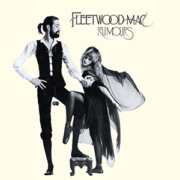

 Fleetwood Mac are a British-American rock band formed in 1967 in London. Due to numerous line-up changes, the only original member present in the band is its namesake, drummer Mick Fleetwood. Although band founder Peter Green named the group by combining the surnames of two of his former bandmates (Fleetwood, McVie) from John Mayall's Bluesbreakers, bassist John McVie played neither on their first single nor at their first concerts, as he initially decided to stay with Mayall. The keyboardist, Christine McVie, who joined the band in 1970 while married to John McVie, appeared on all but the debut album, either as a member or as a session musician. She also supplied the artwork for the album Kiln House.